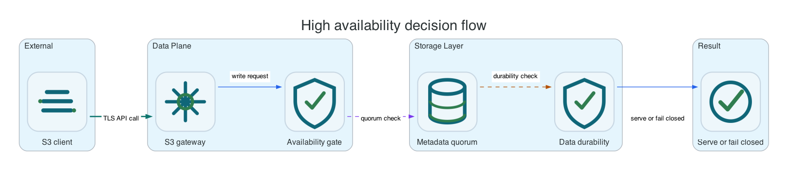

Reference / Runtime
High availability and degraded-mode behavior.
Li9 S3 should keep accepted writes durable, fail closed when metadata quorum or write protection is unsafe, and recover after service or node restart without returning false missing-object responses.
Expected Behavior

| Failure | Expected Result | Why |
|---|---|---|
| Gateway pod or process restart | In-flight clients retry; accepted committed objects remain readable. | Gateway is stateless relative to durable object and metadata state. |
| Metadata leader restart | Writes pause or fail until quorum elects/recovers safely. | Metadata must not split brain. |
| One storage node outage with sufficient protection | Reads and writes continue if quorum/protection policy still allows it. | Replication or erasure coding tolerates the configured failure count. |
| Too many storage nodes lost | Writes fail instead of accepting unsafe data. | Durability policy cannot be satisfied. |
| Healing service restart | Foreground S3 operations continue; background repair resumes later. | Healing is asynchronous maintenance. |
OpenShift Restart Test
oc -n li9-s3-operator delete pod -l app.kubernetes.io/name=li9-s3-operator
oc -n li9-s3-operator rollout status deploy/li9-s3-operator --timeout=10m
oc -n li9-s3-runtime delete pod -l app.kubernetes.io/name=metadata-service --wait=false
oc -n li9-s3-runtime wait --for=condition=Ready s3storage/li9-s3 --timeout=20m
oc -n li9-s3-runtime delete pod -l app.kubernetes.io/name=storage-node --wait=false
oc -n li9-s3-runtime wait --for=condition=Ready s3storage/li9-s3 --timeout=20mNative Package Restart Test
| Platform | Command | Verification |
|---|---|---|
| Linux | sudo systemctl restart li9-s3-storage.target | li9-s3ctl health and AWS CLI object read/write. |
| Windows | Restart-Service Li9S3* | li9-s3ctl.exe health and AWS CLI object read/write. |
Client-Side Integrity Test
dd if=/dev/urandom of=/tmp/li9-ha.bin bs=1M count=128
aws --endpoint-url "$ENDPOINT" --region "$AWS_REGION" s3 cp /tmp/li9-ha.bin "s3://$BUCKET/ha/li9-ha.bin"
aws --endpoint-url "$ENDPOINT" --region "$AWS_REGION" s3 cp "s3://$BUCKET/ha/li9-ha.bin" /tmp/li9-ha-read.bin
sha256sum /tmp/li9-ha.bin /tmp/li9-ha-read.binPromotion Rule
Do not promote a release until it survives repeated operator/runtime restarts, one-node outage during sustained writes, metadata restart, storage-node restart, and post-recovery healing validation.